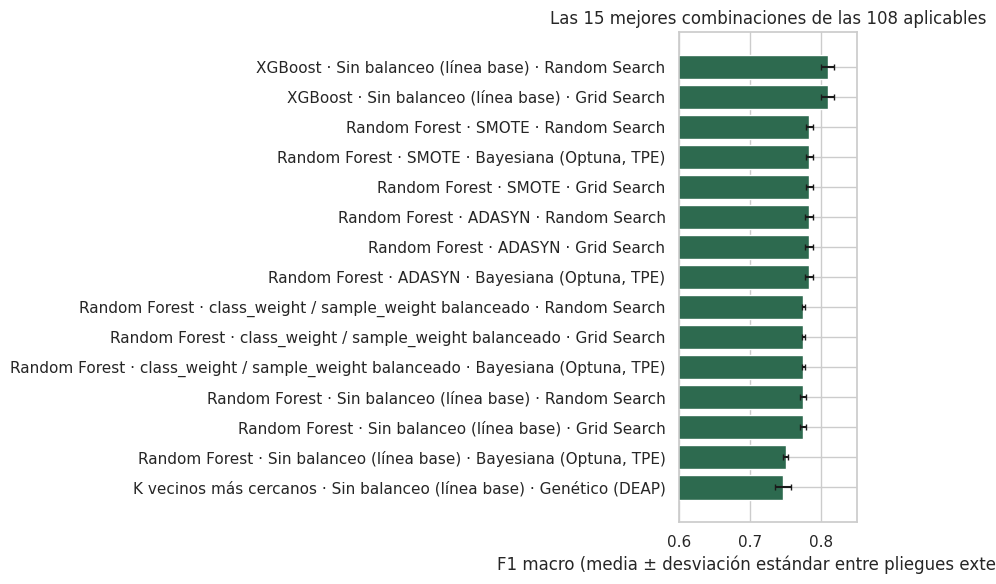
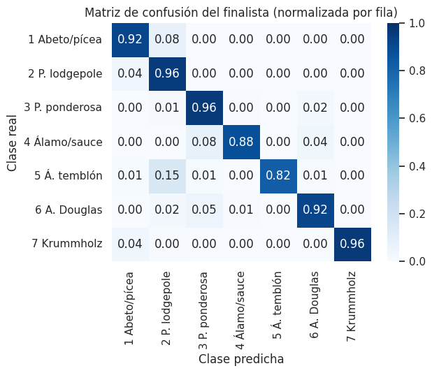
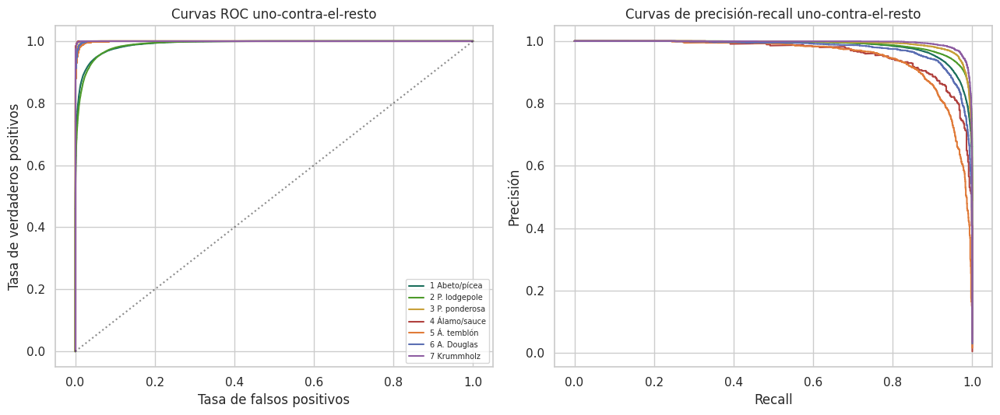
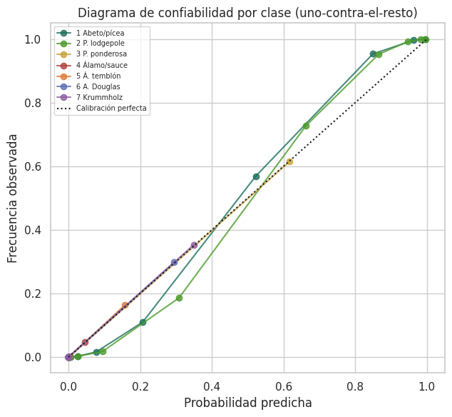

5. Benchmark combinatorio de modelos#
La Parte I estableció que la regresión logística multinomial alcanza un F1 macro de 0,558 en la prueba reservada y que su limitación es de sesgo, no de varianza (sección 3.9). Esta parte del documento aborda la pregunta que se deriva de ese diagnóstico: ¿qué familia de modelos, qué estrategia de balanceo de clases y qué método de optimización de hiperparámetros permiten superar ese desempeño de forma estadística y prácticamente significativa?
Para responderla se construye un diseño factorial completo de 7 algoritmos × 4 estrategias de balanceo × 4 métodos de optimización = 112 combinaciones. Cada combinación se entrena y se evalúa de forma independiente mediante validación cruzada anidada, y todas comparten la partición, la semilla y el preprocesamiento de la Parte I. Como Covertype no contiene una variable respuesta continua, el estudio se restringe a la rama de clasificación; la regresión no tiene un objetivo natural en este conjunto de datos.
Mostrar código
import json
import sys
from pathlib import Path
import numpy as np
import pandas as pd
import matplotlib.pyplot as plt
import seaborn as sns
sys.path.insert(0, str(Path.cwd().parent / "scripts"))
import _utils3 as u3
sns.set_theme(style="whitegrid", context="notebook")
RESULTS3 = Path.cwd().parent / "resultados"
tabla = pd.read_csv(RESULTS3 / "tabla_maestra.csv", encoding="utf-8-sig")
tabla["f1_macro_pliegues"] = tabla["f1_macro_pliegues"].apply(
lambda s: json.loads(s) if isinstance(s, str) else s
)
print(f"Combinaciones registradas: {len(tabla)} de 112")
print(f"Aplicables: {int(tabla['aplicable'].sum())} · "
f"No aplicables (balanceo no soportado por el algoritmo): {int((~tabla['aplicable']).sum())}")
Combinaciones registradas: 112 de 112
Aplicables: 108 · No aplicables (balanceo no soportado por el algoritmo): 4
5.1 Diseño experimental#
Métrica principal de validación#
El criterio de selección en todas las etapas es el F1 macro, es decir, la media no ponderada del F1 de las siete clases. La elección responde a la estructura del problema: con una razón de desbalance de 103:1 (sección 1.7), la accuracy está dominada por las dos clases mayoritarias, que suman el 85 % de las celdas, y puede mejorar aunque el modelo ignore por completo las clases raras. Esto fue lo que ocurrió con la regresión logística, que alcanzó 0,72 de accuracy con un recall de 0,04 en el álamo temblón (sección 3.5). El F1 macro asigna el mismo peso a cada clase y penaliza tanto los falsos positivos como los falsos negativos, lo que lo hace adecuado para un inventario forestal en el que omitir un ecosistema raro y sobrestimarlo son errores de costo comparable. La accuracy, la exactitud balanceada, el AUC uno-contra-el-resto y el log loss se reportan como métricas complementarias.
Validación cruzada anidada#
Seleccionar hiperparámetros y estimar el desempeño con los mismos pliegues produce una estimación optimista, conocida como sesgo de selección del modelo [Cawley and Talbot, 2010, Varma and Simon, 2006]. Para evitarlo, cada combinación se evalúa con dos bucles:
Bucle externo (3 pliegues estratificados): estima el desempeño de generalización. Cada pliegue externo deja fuera un tercio de la submuestra, que no interviene en la búsqueda de hiperparámetros.
Bucle interno (3 pliegues estratificados): dentro de cada partición de entrenamiento externa, ejecuta el método de optimización completo y elige la configuración con mayor F1 macro medio.
Todas las métricas que se reportan en los capítulos 5 a 7 provienen del bucle externo.
El preprocesamiento (ingeniería de variables, escalado y, cuando corresponde, SMOTE o
ADASYN) se encapsula en un Pipeline de scikit-learn o de imbalanced-learn y se ajusta
dentro de cada pliegue, de modo que ninguna observación de validación interviene en el
ajuste de las transformaciones ni en la generación de muestras sintéticas.
Número de pliegues. Con tres pliegues externos e internos, cada evaluación interna se entrena con unas 17.800 celdas y se valida con unas 8.900. En consecuencia, la clase menos frecuente (álamo/sauce, 0,47 %) aporta alrededor de 40 observaciones a cada partición de validación interna, suficientes para estimar su F1. Con cinco o diez pliegues, el número de ajustes se multiplicaría por un factor de 2,8 a 11 sin una ganancia proporcional en la precisión de la estimación, porque el error de muestreo del F1 macro entre pliegues ya es del orden de 0,005 (sección 5.4). La contrapartida es que tres pliegues externos ofrecen poca potencia a las pruebas no paramétricas sobre rangos, un aspecto que se analiza en el capítulo 7.
Submuestra para el benchmark#
Entrenar 112 combinaciones con validación anidada sobre las 464.809 filas de
entrenamiento implicaría decenas de miles de ajustes de modelos de conjunto. La curva de
aprendizaje de la sección 3.9 muestra que el F1 macro de validación del modelo lineal se
estabiliza a partir de unas 30.000 celdas; con base en ese resultado, el benchmark se
ejecuta sobre una submuestra estratificada de 40.000 filas del conjunto de
entrenamiento (N_BENCHMARK en _utils3.py). La SVM con núcleo RBF, cuyo costo de
entrenamiento crece entre \(O(n^2)\) y \(O(n^3)\), se evalúa sobre una submuestra estratificada
de 9.000 filas.
Nota
La submuestra modifica únicamente el número de filas de entrenamiento empleadas en la búsqueda y en la validación anidada. La partición 80/20, la semilla y el preprocesamiento son los de la Parte I. El modelo finalista se reentrena con el conjunto de entrenamiento completo antes de evaluarse, una sola vez, en la prueba reservada (sección 5.5).
5.2 Algoritmos y espacios de búsqueda#
Los rangos se fijaron a partir de la escala del problema (57 predictoras tras la ingeniería de variables, 40.000 filas y 7 clases) y de los resultados de la Parte I, no de valores arbitrarios. Los parámetros continuos de regularización y suavizado se exploran en escala logarítmica.
Algoritmo |
Hiperparámetros explorados |
Justificación del rango |
|---|---|---|
KNN [Cover and Hart, 1967] |
|
Valores impares, desde vecindades locales hasta suavizados amplios; la ponderación por distancia favorece la frontera local en las zonas de solapamiento entre clases (sección 2.3) |
Naive Bayes gaussiano [Hand and Yu, 2001] |
|
Intervalo estándar de suavizado de la varianza, que estabiliza las variables binarias de suelo con varianza casi nula |
Regresión logística (L1/L2) [Hosmer et al., 2013] |
|
Cubre C = 10, el óptimo de la sección 3.3, y C = 1, con un F1 de validación prácticamente idéntico; la penalización L1 permite contrastar la selección implícita de variables frente a la contracción L2 |
Árbol de decisión [Breiman et al., 1984] |
|
Desde árboles interpretables hasta árboles completamente desarrollados, con hojas mínimas que controlan el sobreajuste |
Random Forest |
|
Espacio reducido durante la ejecución (sección 9.3); el espacio inicial, usado en dos combinaciones, incluía 300 árboles y profundidad sin límite |
XGBoost ( |
|
Espacio reducido durante la ejecución; el espacio inicial (Grid y Random Search sin balanceo) incluía 200 árboles, profundidad 8 y tasa de aprendizaje 0,2 |
SVM (núcleo RBF) [Cortes and Vapnik, 1995] |
|
|
El presupuesto de cada método por pliegue externo fue el siguiente: Grid Search recorre la rejilla completa (entre 4 y 18 configuraciones, según el algoritmo); Random Search evalúa 6 configuraciones; la optimización bayesiana, 6 ensayos de Optuna, y el algoritmo genético, una población de 4 individuos durante 2 generaciones. Estos presupuestos son deliberadamente pequeños frente a los habituales en la literatura, una restricción impuesta por el costo de la validación anidada sobre 112 combinaciones en una sola estación de trabajo. Sus consecuencias se discuten en los capítulos 6 y 9.
5.3 Estrategias de balanceo#
Sin balanceo: línea base, idéntica al modelo de la Parte I.
SMOTE [Chawla et al., 2002]: genera observaciones sintéticas de las clases minoritarias por interpolación entre vecinos cercanos, en el espacio de las 57 variables ya transformadas.
ADASYN [He et al., 2008]: variante adaptativa de SMOTE que genera más observaciones en las regiones donde la clase minoritaria es más difícil de aprender, es decir, donde predominan los vecinos de otras clases.
Ponderación por clase:
class_weight="balanced"en los algoritmos que lo admiten (regresión logística, árbol, Random Forest y SVM). En XGBoost y Naive Bayes se usa el equivalente funcional,sample_weight, con pesos inversamente proporcionales a la frecuencia de cada clase en el pliegue de entrenamiento. KNN no admite ninguno de los dos mecanismos; esas cuatro combinaciones se declaran no aplicables en lugar de forzar una aproximación artificial.
Mostrar código
no_aplicables = tabla.loc[~tabla["aplicable"], ["modelo_nombre", "balanceo_nombre", "optimizacion_nombre"]]
no_aplicables.columns = ["Algoritmo", "Balanceo", "Optimización"]
display(no_aplicables.style.hide(axis="index"))
| Algoritmo | Balanceo | Optimización |
|---|---|---|
| K vecinos más cercanos | class_weight / sample_weight balanceado | Grid Search |
| K vecinos más cercanos | class_weight / sample_weight balanceado | Random Search |
| K vecinos más cercanos | class_weight / sample_weight balanceado | Bayesiana (Optuna, TPE) |
| K vecinos más cercanos | class_weight / sample_weight balanceado | Genético (DEAP) |
5.4 Resultados del benchmark#
La tabla siguiente resume, para cada par algoritmo–balanceo, el F1 macro medio del bucle externo, promediado sobre los cuatro métodos de optimización, junto con el mínimo y el máximo alcanzados.
Mostrar código
aplic = tabla[tabla["aplicable"]].copy()
resumen = (aplic.groupby(["modelo_nombre", "balanceo_nombre"])
.agg(media=("f1_macro_media", "mean"), minimo=("f1_macro_media", "min"),
maximo=("f1_macro_media", "max"))
.round(3).sort_values("media", ascending=False))
resumen.index.names = ["Algoritmo", "Balanceo"]
resumen.columns = ["F1 macro medio", "Mínimo", "Máximo"]
display(resumen)
| Algoritmo | Balanceo | F1 macro medio | Mínimo | Máximo |
|---|---|---|---|---|
| XGBoost | Sin balanceo (línea base) | 0.750 | 0.683 | 0.809 |
| K vecinos más cercanos | Sin balanceo (línea base) | 0.746 | 0.746 | 0.746 |
| Random Forest | SMOTE | 0.742 | 0.618 | 0.783 |
| Random Forest | class_weight / sample_weight balanceado | 0.741 | 0.641 | 0.775 |
| Random Forest | ADASYN | 0.736 | 0.595 | 0.783 |
| Random Forest | Sin balanceo (línea base) | 0.720 | 0.583 | 0.775 |
| K vecinos más cercanos | SMOTE | 0.713 | 0.706 | 0.716 |
| Árbol de decisión | Sin balanceo (línea base) | 0.711 | 0.682 | 0.722 |
| K vecinos más cercanos | ADASYN | 0.703 | 0.695 | 0.705 |
| Árbol de decisión | SMOTE | 0.697 | 0.667 | 0.707 |
| XGBoost | SMOTE | 0.686 | 0.639 | 0.723 |
| XGBoost | class_weight / sample_weight balanceado | 0.683 | 0.637 | 0.722 |
| Árbol de decisión | ADASYN | 0.682 | 0.653 | 0.700 |
| SVM (núcleo RBF) | Sin balanceo (línea base) | 0.666 | 0.657 | 0.669 |
| SVM (núcleo RBF) | SMOTE | 0.664 | 0.657 | 0.670 |
| XGBoost | ADASYN | 0.664 | 0.617 | 0.706 |
| Árbol de decisión | class_weight / sample_weight balanceado | 0.658 | 0.602 | 0.683 |
| SVM (núcleo RBF) | ADASYN | 0.651 | 0.645 | 0.658 |
| SVM (núcleo RBF) | class_weight / sample_weight balanceado | 0.646 | 0.615 | 0.666 |
| Regresión logística (L1/L2) | Sin balanceo (línea base) | 0.563 | 0.562 | 0.564 |
| Regresión logística (L1/L2) | SMOTE | 0.528 | 0.528 | 0.529 |
| Regresión logística (L1/L2) | class_weight / sample_weight balanceado | 0.512 | 0.509 | 0.518 |
| Regresión logística (L1/L2) | ADASYN | 0.494 | 0.494 | 0.494 |
| Naive Bayes gaussiano | SMOTE | 0.223 | 0.221 | 0.224 |
| Naive Bayes gaussiano | Sin balanceo (línea base) | 0.201 | 0.197 | 0.202 |
| Naive Bayes gaussiano | class_weight / sample_weight balanceado | 0.194 | 0.190 | 0.195 |
| Naive Bayes gaussiano | ADASYN | 0.180 | 0.177 | 0.181 |
Mostrar código
top15 = aplic.sort_values("f1_macro_media", ascending=False).head(15)
fig, ax = plt.subplots(figsize=(9, 6))
etiquetas = top15["modelo_nombre"] + " · " + top15["balanceo_nombre"] + " · " + top15["optimizacion_nombre"]
ax.barh(etiquetas, top15["f1_macro_media"], xerr=top15["f1_macro_sd"], color="#2d6a4f", capsize=2)
ax.set_xlabel("F1 macro (media ± desviación estándar entre pliegues externos)")
ax.set_title("Las 15 mejores combinaciones de las 108 aplicables")
ax.set_xlim(0.6, 0.85)
ax.invert_yaxis()
plt.tight_layout()
plt.show()

Mostrar código
mejor = aplic.loc[aplic["f1_macro_media"].idxmax()]
base_lr = aplic[(aplic["modelo"] == "LR") & (aplic["balanceo"] == "ninguno")]["f1_macro_media"].max()
print(f"Mejor combinación: {mejor['modelo_nombre']} · {mejor['balanceo_nombre']} · {mejor['optimizacion_nombre']}")
print(f"F1 macro (bucle externo) = {mejor['f1_macro_media']:.4f} ± {mejor['f1_macro_sd']:.4f}")
print(f"Regresión logística sin balanceo (misma submuestra): {base_lr:.4f}")
print(f"Diferencia absoluta: {mejor['f1_macro_media'] - base_lr:+.4f}")
Mejor combinación: XGBoost · Sin balanceo (línea base) · Grid Search
F1 macro (bucle externo) = 0.8088 ± 0.0089
Regresión logística sin balanceo (misma submuestra): 0.5636
Diferencia absoluta: +0.2452
Los resultados permiten cuatro observaciones:
Los métodos de conjunto basados en árboles dominan la clasificación. XGBoost [Chen and Guestrin, 2016] (0,809) y Random Forest [Breiman, 2001] (0,783) ocupan las primeras posiciones, seguidos de KNN (0,746) y del árbol de decisión individual (0,722). La regresión logística (0,564) y Naive Bayes (0,224) quedan al final, lo que confirma que las fronteras entre clases son no lineales y que el supuesto de independencia condicional de Naive Bayes es incompatible con la fuerte dependencia entre elevación, área silvestre y tipo de suelo (sección 2.3).
El balanceo no mejora a los mejores algoritmos. En XGBoost, las tres estrategias de balanceo reducen el F1 macro máximo entre 0,086 y 0,103 unidades. En Random Forest, SMOTE y ADASYN lo elevan en menos de 0,01. Esta comparación, sin embargo, está condicionada por la asimetría de los espacios de búsqueda descrita en la sección 5.2: la combinación de XGBoost sin balanceo dispuso de árboles más profundos y de una tasa de aprendizaje mayor que las variantes balanceadas.
La variabilidad entre pliegues es pequeña. La desviación estándar del F1 macro entre pliegues externos se mantiene por debajo de 0,01 en las combinaciones mejor clasificadas, de modo que las diferencias de varias centésimas entre familias de algoritmos superan con amplitud la variabilidad intrínseca de cada combinación.
Varias combinaciones empatan exactamente. Por ejemplo, Random Forest con SMOTE alcanza el mismo F1 macro con Grid, Random y Bayesiano, porque en un espacio discreto de cuatro configuraciones los tres métodos convergen a la misma solución. Este fenómeno condiciona la comparación entre optimizadores del capítulo 6.
La diferencia de 0,245 entre el mejor modelo y la regresión logística es una estimación puntual; su significancia estadística y su tamaño de efecto se evalúan en el capítulo 7.
5.5 Modelo finalista reentrenado con el conjunto completo#
El valor anterior (0,809) es la estimación del bucle externo sobre la submuestra de
40.000 filas. El modelo finalista, XGBoost sin balanceo, se reentrena con las
464.809 filas de entrenamiento usando los hiperparámetros seleccionados en los tres
pliegues externos (n_estimators = 200, max_depth = 8, learning_rate = 0,2) y se
evalúa una sola vez sobre las 116.203 filas de la prueba reservada en la sección 1.6.
Mostrar código
with open(RESULTS3 / "resumen_finalista.json", encoding="utf-8") as f:
resumen_final = json.load(f)
print(f"Hiperparámetros: {resumen_final['hiperparametros']}")
print(f"F1 macro en la prueba reservada (finalista): {resumen_final['f1_macro_finalista']:.4f}")
print(f"F1 macro en la prueba reservada (regresión logística): {resumen_final['f1_macro_referencia']:.4f}")
print(f"Diferencia absoluta: {resumen_final['ganancia_absoluta']:+.4f}")
Hiperparámetros: {'n_estimators': 200, 'max_depth': 8, 'learning_rate': 0.2}
F1 macro en la prueba reservada (finalista): 0.9271
F1 macro en la prueba reservada (regresión logística): 0.5564
Diferencia absoluta: +0.3706
El F1 macro sube de 0,809 en la submuestra a 0,927 con el conjunto completo. La diferencia tiene una explicación directa: con 11,6 veces más datos de entrenamiento, el álamo/sauce pasa de unas 190 observaciones en la submuestra a unas 2.200 en el conjunto completo, y el álamo temblón, de unas 650 a unas 7.600. A diferencia de la regresión logística, cuya curva de aprendizaje se aplana a partir de 30.000 celdas (sección 3.9), un modelo de boosting con árboles de profundidad 8 aprovecha esa información adicional para modelar interacciones y fronteras locales en las clases minoritarias. Por la misma razón, la estimación del bucle externo debe interpretarse como un límite inferior del desempeño alcanzable con el conjunto completo.
Nota
Los hiperparámetros del finalista provienen de las combinaciones de Grid Search y Random Search sin balanceo, que se ejecutaron con el espacio de búsqueda inicial de XGBoost antes de que este se redujera por costo computacional (sección 9.3). Ambos métodos coincidieron en la misma configuración en los tres pliegues externos. Esta asimetría se declara explícitamente porque favorece a XGBoost sin balanceo frente a las demás variantes de XGBoost y debe tenerse en cuenta al interpretar el efecto del balanceo.
Nota
La regresión logística de referencia de la Parte II se reentrenó con \(C = 1\) y preprocesamiento con ingeniería de variables. Su F1 macro de validación cruzada (0,5666) es indistinguible del de \(C = 10\) (0,5670), el óptimo de la sección 3.3, y su F1 macro en la prueba reservada (0,556) difiere en 0,002 del reportado en la Parte I (0,558).
5.6 Evaluación del finalista en la prueba reservada#
Mostrar código
metricas_tabla = pd.read_csv(RESULTS3 / "finalista_metricas.csv", encoding="utf-8-sig")
metricas_tabla = metricas_tabla.set_index("modelo").round(3)
metricas_tabla.index.name = "Modelo"
display(metricas_tabla)
| Modelo | Accuracy | Exactitud balanceada | Precisión macro | Recall macro | F1 macro | F1 ponderado | AUC OvR macro | Log loss |
|---|---|---|---|---|---|---|---|---|
| XGBoost (finalista) | 0.940 | 0.917 | 0.938 | 0.917 | 0.927 | 0.940 | 0.997 | 0.177 |
| Regresión logística (referencia) | 0.724 | 0.531 | 0.649 | 0.531 | 0.556 | 0.716 | 0.937 | 0.628 |
Mostrar código
cm = pd.read_csv(RESULTS3 / "finalista_matriz_confusion.csv", index_col=0, encoding="utf-8-sig")
cm.columns = [int(c) for c in cm.columns]
fig, ax = plt.subplots(figsize=(6.5, 5.5))
sns.heatmap(cm, annot=True, fmt=".2f", cmap="Blues", ax=ax, vmin=0, vmax=1,
xticklabels=[u3.CLASS_SHORT[c] for c in cm.columns],
yticklabels=[u3.CLASS_SHORT[c] for c in cm.index])
ax.set(xlabel="Clase predicha", ylabel="Clase real",
title="Matriz de confusión del finalista (normalizada por fila)")
plt.tight_layout()
plt.show()

Mostrar código
with open(RESULTS3 / "finalista_roc_pr.json", encoding="utf-8") as f:
roc_data = json.load(f)
fig, ax = plt.subplots(1, 2, figsize=(13, 5.5))
for d in roc_data:
c = d["clase"]
ax[0].plot(d["fpr"], d["tpr"], label=u3.CLASS_SHORT[c], color=u3.CLASS_PALETTE[c])
ax[1].plot(d["recall"], d["precision"], label=u3.CLASS_SHORT[c], color=u3.CLASS_PALETTE[c])
ax[0].plot([0, 1], [0, 1], "k:", alpha=0.5)
ax[0].set(xlabel="Tasa de falsos positivos", ylabel="Tasa de verdaderos positivos",
title="Curvas ROC uno-contra-el-resto")
ax[1].set(xlabel="Recall", ylabel="Precisión", title="Curvas de precisión-recall uno-contra-el-resto")
ax[0].legend(fontsize=7, loc="lower right")
plt.tight_layout()
plt.show()

Mostrar código
recall_fin = pd.Series(np.diag(cm.to_numpy()), index=[u3.CLASS_SHORT[c] for c in cm.index])
display(recall_fin.to_frame("Recall del finalista").round(3).T)
| 1 Abeto/pícea | 2 P. lodgepole | 3 P. ponderosa | 4 Álamo/sauce | 5 Á. temblón | 6 A. Douglas | 7 Krummholz | |
|---|---|---|---|---|---|---|---|
| Recall del finalista | 0.919 | 0.957 | 0.96 | 0.88 | 0.825 | 0.921 | 0.959 |
El finalista alcanza un accuracy de 0,940, una exactitud balanceada de 0,917 y un AUC uno-contra-el-resto de 0,997. Frente a la regresión logística, la mejora se concentra en las clases que el modelo lineal no lograba separar: el recall del álamo temblón pasa de 0,04 a 0,82 y el del abeto de Douglas, de 0,30 a 0,92. Todas las clases superan un recall de 0,82. Los errores residuales siguen el mismo patrón ecológico identificado en la sección 3.7: la confusión dominante se produce entre el abeto/pícea y el pino lodgepole, las dos clases mayoritarias: el 7,8 % de las celdas de abeto/pícea se clasifica como pino lodgepole. La segunda fuente de error es el álamo temblón, del que un 15,2 % se confunde con pino lodgepole.
5.7 Calibración del finalista#
Un modelo puede discriminar bien entre clases sin que sus probabilidades reflejen la frecuencia real de ocurrencia. La calibración se evalúa con el Brier score multiclase (error cuadrático medio entre el vector de probabilidades predichas y la codificación one-hot de la clase real), con el error de calibración esperado [Naeini et al., 2015] (ECE, la discrepancia media ponderada entre confianza y frecuencia observada en 10 intervalos de igual frecuencia) y con diagramas de confiabilidad por clase.
Mostrar código
with open(RESULTS3 / "finalista_calibracion_resumen.json", encoding="utf-8") as f:
calib = json.load(f)
cal = pd.DataFrame({"ECE": {u3.CLASS_SHORT[int(c)]: e for c, e in calib["ece_por_clase_finalista"].items()}})
print(f"Brier multiclase: finalista = {calib['brier_multiclase_finalista']:.4f} · "
f"regresión logística = {calib['brier_multiclase_referencia']:.4f}")
print(f"ECE medio del finalista: {calib['ece_medio_finalista']:.4f}")
display(cal.round(4).T)
Brier multiclase: finalista = 0.0969 · regresión logística = 0.3809
ECE medio del finalista: 0.0121
| 1 Abeto/pícea | 2 P. lodgepole | 3 P. ponderosa | 4 Álamo/sauce | 5 Á. temblón | 6 A. Douglas | 7 Krummholz | |
|---|---|---|---|---|---|---|---|
| ECE | 0.0378 | 0.0445 | 0.0003 | 0.0002 | 0.0008 | 0.0004 | 0.0004 |
Mostrar código
calib_df = pd.read_csv(RESULTS3 / "finalista_calibracion.csv", encoding="utf-8-sig")
fig, ax = plt.subplots(figsize=(6.5, 6))
for c in sorted(calib_df["clase"].unique()):
sub = calib_df[calib_df["clase"] == c]
ax.plot(sub["prob_predicha"], sub["frecuencia_observada"], "o-", color=u3.CLASS_PALETTE[c],
label=u3.CLASS_SHORT[c], alpha=0.8)
ax.plot([0, 1], [0, 1], "k:", label="Calibración perfecta")
ax.set(xlabel="Probabilidad predicha", ylabel="Frecuencia observada",
title="Diagrama de confiabilidad por clase (uno-contra-el-resto)")
ax.legend(fontsize=7)
plt.tight_layout()
plt.show()

El Brier multiclase del finalista (0,097) es cuatro veces menor que el de la regresión logística (0,381): además de clasificar mejor, el modelo asigna probabilidades más fiables. El ECE es inferior a 0,001 en las cinco clases minoritarias y se sitúa en torno a 0,04 en las dos mayoritarias, donde los diagramas de confiabilidad muestran una ligera subconfianza: las probabilidades se comprimen hacia valores intermedios (por ejemplo, las celdas con probabilidad predicha media de 0,85 para el abeto/pícea pertenecen a esa clase en el 95 % de los casos), un patrón coherente con la zona de solapamiento entre el abeto/pícea y el pino lodgepole. Con un ECE medio de 0,012, una recalibración posterior (escalado de Platt [Platt, 1999] o regresión isotónica [Zadrozny and Elkan, 2002]) tendría un efecto marginal; por esa razón no se aplica y el finalista se reporta sin recalibrar.